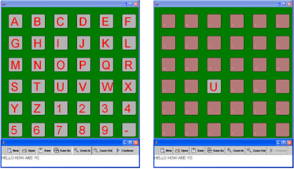
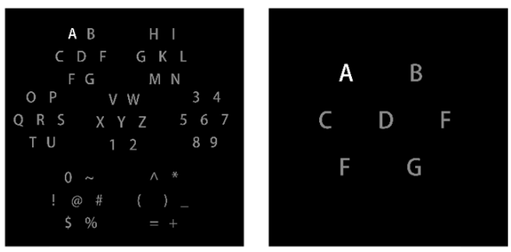

P300范式调研
传统的视觉 P300 电位刺激范式下，拼写器允许受试者通过闪烁不同的行和列来选择目标，但没有考虑两个相邻符号连续闪烁对结果的影响。
近年有大量研究针对 P300 电位刺激范式的拼写界面布局开展优化工作，有效消除了相邻符号闪烁带来的影响。
•一些研究发现面部符号可以比传统 P300 字符拼写范式诱导更高的 P300 电位。因此许多研究尝试用人脸图像代替数字或字母符号，使每个符号在以一定频率闪烁时都会变成人脸图像，而不是简单的颜色或大小变化，实现了 P300 电位刺激范式的解码性能提升。
•在视觉 P300 电位刺激范式中添加其他形式的物理刺激可以提高使用者的表现，例如使用偏光镜增强刺激、基于积极情绪的视听组合刺激、引入声音和视频刺激等方式。
Farwell-Donchin Paradigm (FD-Speller)
刺激界面
刺激流程
Main
经典的行列选择范式
相关参数：
-
ISI–从某一行或某一列闪烁开始到下一行或下一列闪烁开始的时间；
-
ITI–从一次试验（6 行或 6 列闪烁）开始到下一次试验开始的时间。
文章对比了ISI为125ms和500ms的系统性能，后者获得了更高的准确率但是信息传输率显著下降。
相关链接
[1] L. A. Farwell和E. Donchin, 《Talking off the top of your head: toward a mental prosthesis utilizing event-related brain potentials》.
Single Display Paradigm (SD-Speller)
Main
在现有的 P300 拼写器中，矩阵的行和列是连续随机增强的，刺激频率为 1/N（N 为矩阵的行数或列数）。我们提出了一种新的范式，即随机、单独地显示每个单字符（因此刺激频率降至 1/(N*N)）。在线实验表明，这种新的拼写器大大提高了成绩。具体来说，与现有的 P300 拼写器相比，新拼写器可将字符分类错误率降低 80%，或将信息传递率提高一倍。
实验设计
对照组, 每行显示180ms，ITI=180*12 = 2160;
实验组，每个字符显示60ms,ITI = 60*36 = 2160;
相关链接
[1] Cuntai Guan, M. Thulasidas和Jiankang Wu, 《High performance p300 speller for brain-computer interface》, 收入 IEEE International Workshop on Biomedical Circuits and Systems, 2004., Singapore: IEEE, 2004, 页 293–296. doi: 10.1109/BIOCAS.2004.1454155.
区域刺激范式

Main
在此范式中，字母和数字以 7×7 的正六边形形状分布在屏幕上，以此缓解字符拥挤和降低邻接区域的视觉干扰。
本研究的目的是探索 Farwell 和 Donchin 设计的 P300 BCI 拼写器范式中的感知错误。为了揭示范式中可能的误差来源，使用了一种排除任何基于学习的信号处理算法（例如神经网络）的方法。如果使用基于学习的算法，就会学习到任何系统性错误。数据分析表明，在Farwell-Donchin范式中，当检测到与目标行/列相邻的行/列时，错误情况的数量最多。在任何新的 P300 拼写器范式的设计中，都应考虑这种感知误差。考虑到这种感知误差，设计了一种基于将计算机屏幕划分为不同区域的新范式。对观察两种范式的十个不同受试者的实验结果证实，新范式的准确性更高。
然而，由于两种范式在设计上有很大不同，因此无法直接比较检测字符和目标字符之间的距离效应。显示误差减少的唯一方法是查看表2和表3中的总体结果，这表明新范式的准确性显着提高。这种改进不仅归因于基于区域的设计，还归因于可能影响整体性能的其他因素，例如目标闪烁的概率。
除了更高的准确率外，范式还有其他几个优点：首先，字符数从 36 个增加到 49 个，为受试者拼写单词提供了更大的灵活性；
其次，oddball概率在 Farwell-Donchin 中为 2/12 或 1/6，而在新范式中降至 1/7。研究表明，概率降低会导致 P300 振幅增大[12]。
因此，在新范式中，P300 振幅更大，P300 的检测也更容易。这意味着需要较少的闪光次数。
相关链接
[1] R. Fazel-Rezai and K. Abhari, ‘A region-based P300 speller for brain-computer interface’, Can. J. Electr. Comput. Eng., vol. 34, no. 3, pp. 81–85, 2009, doi: 10.1109/CJECE.2009.5443854.
[2] E. Donchin, K.M. Spencer, and R. Wijesinghe, “The mental prosthesis: Assessing the speed of a P300-based brain-computer interface,” IEEE Trans. Rehab. Eng., vol. 8, no. 2, June 2000, pp. 174–179.
棋盘格范式

Main
为了降低分类器在区分目标字符闪光和相邻非 目标字符闪光的误差，
目的：脑电脑机接口（BCI脑电脑机接口（BCI）可为肌萎缩性脊髓侧索硬化症（ALS）或其他神经肌肉疾病患者提供一种非肌肉性交流方式。我们介绍了一种基于 P300 的新型 BCI 刺激演示–棋盘范例（CBP）。CBP的表现与Farwell和Donchin（1988年）引入的标准行/列范式（RCP）的表现进行了比较。方法：18 名参与者使用由字母数字字符和键盘命令组成的 8-9 矩阵，以平衡的方式使用 CBP 和 RCP。通过大约 9-12 分钟的校准数据，我们使用逐步线性判别分析对后续数据进行在线分类。结果显示CBP 的平均在线准确率为 92%，明显高于 RCP 的 77%。修正了因错误而导致的额外选择，CBP 的平均比特率（23 比特/分钟）也明显高于 RCP 的平均比特率（17 比特/分钟）。此外，两种范式产生的波形也明显不同。对三名 ALS 高级患者进行的初步测试也得出了类似的结果。此外，与 RCP 相比，这些人更喜欢 CBP。结论：这些结果表明，CBP 在性能和用户接受度方面明显优于 RCP。意义重大：CBP 有可能提供比 RCP 更有效的 BCI。这对于患有严重神经肌肉残疾的人来说尤为重要。
相关链接
[1] G. Townsend et al., ‘A novel P300-based brain–computer interface stimulus presentation paradigm: Moving beyond rows and columns’, Clinical Neurophysiology, vol. 121, no. 7, pp. 1109–1120, Jul. 2010, doi: 10.1016/j.clinph.2010.01.030.